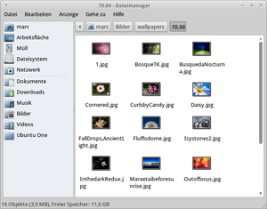
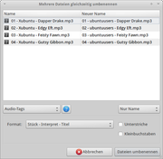
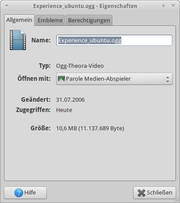
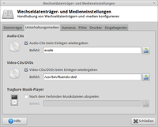

Thunar
Dieser Artikel wurde für die folgenden Ubuntu-Versionen getestet:
Ubuntu 16.04 Xenial Xerus
Ubuntu 14.04 Trusty Tahr
Zum Verständnis dieses Artikels sind folgende Seiten hilfreich:
Ein Terminal öffnen, optional
Eine Archivdatei entpacken, optional
Thunar  ist der Standard-Dateimanager von Xfce bzw. Xubuntu, der Nautilus äußerlich gleicht. Er beschränkt sich zwar auf die wesentlichen Funktionen, bietet aber in manchen Bereichen (z.B. Dateien umbenennen) sogar mehr Komfort. Mit Benutzerdefinierte Aktionen und Senden an kann man die Funktionalität von Thunar nach eigenen Wünschen und Bedürfnissen erweitern und so z.B. eine Dateisuche oder den Audioplayer Audacious zum Kontextmenü hinzufügen.
ist der Standard-Dateimanager von Xfce bzw. Xubuntu, der Nautilus äußerlich gleicht. Er beschränkt sich zwar auf die wesentlichen Funktionen, bietet aber in manchen Bereichen (z.B. Dateien umbenennen) sogar mehr Komfort. Mit Benutzerdefinierte Aktionen und Senden an kann man die Funktionalität von Thunar nach eigenen Wünschen und Bedürfnissen erweitern und so z.B. eine Dateisuche oder den Audioplayer Audacious zum Kontextmenü hinzufügen.
Der Zugriff auf Netzwerk-Freigaben anderer Rechner ist inzwischen integriert (ab Xfce 4.8 bzw. Ubuntu 11.04). Um selbst eine Freigabe einzurichten, siehe den Abschnitt Freigaben weiter unten.
Installation¶
Unter Xubuntu ist Thunar vorinstalliert. Ansonsten muss folgendes Paket installiert [1] werden:
thunar (universe)
 mit apturl
mit apturl
Paketliste zum Kopieren:
sudo apt-get install thunar
sudo aptitude install thunar
Optional kann man diese Plugins installieren:
thunar-media-tags-plugin (universe, Audiotags direkt in Thunar editieren )
thunar-archive-plugin (universe, für den Umgang mit (komprimierten) Archiven)
mit apturl
Paketliste zum Kopieren:
sudo apt-get install thunar-media-tags-plugin thunar-archive-plugin
sudo aptitude install thunar-media-tags-plugin thunar-archive-plugin
Die folgenden Pakete sind nicht in allen Ubuntu-Versionen enthalten:
thunar-gtkhash, universe, Prüfsummen mit GtkHash erstellen, ab Ubuntu 12.04
thunar-vcs-plugin, universe, Integration von Subversion und Git, ab Ubuntu 12.04
thunar-dropbox, universe, Integration von Dropbox, ab Ubuntu 14.10
Thunar benutzen¶
Die Benutzung von Thunar weicht nicht von der anderer Dateimanager ab. Mit dem Menü der rechten Maustaste  kann man Ordner und Dateien kopieren, ausschneiden, einfügen und umbenennen, Dateien und Ordner per Doppelklick öffnen oder sich die Eigenschaften ansehen. Ziehen und Fallenlassen ("Drag&Drop") und Tastenkombinationen kennt Thunar selbstverständlich auch. Die Seitenleiste links ist mit Lesezeichen individuell erweiterbar, was den Umgang mit häufig benutzten Ordnern erleichtert. Besonders interessant sind die vom Benutzer zu definierenden Aktionen.
kann man Ordner und Dateien kopieren, ausschneiden, einfügen und umbenennen, Dateien und Ordner per Doppelklick öffnen oder sich die Eigenschaften ansehen. Ziehen und Fallenlassen ("Drag&Drop") und Tastenkombinationen kennt Thunar selbstverständlich auch. Die Seitenleiste links ist mit Lesezeichen individuell erweiterbar, was den Umgang mit häufig benutzten Ordnern erleichtert. Besonders interessant sind die vom Benutzer zu definierenden Aktionen.

Ansichtsmodi¶
Thunar gestattet es unter "Anzeige", eine Vielzahl von Einstellungsmöglichkeiten auszuwählen, um den Dateimanager den eigenen Vorstellungen entsprechend zu konfigurieren:
"Adressleiste" - Zur Verfügung stehen "Pfadleistenstil" und "Werkzeugleistenstil".
"Seitenliste" - Ansichtsmodi "Lesezeichen" und "Baumansicht" zur Auswahl.
"Statusleiste" - (De)aktiviert man diese werden die Informationen zu freiem Speicher etc. (nicht mehr) angezeigt.
"Verborgene Dateien anzeigen" - Diese Option zeigt die versteckten Dateien / Ordner des Systems an.
"Anordnen" - Anordnung der Dateien nach verschiedenen Kriterien (u.a. Name, Größe und Änderungsdatum)
Außerdem besteht die Möglichkeit, die Ansichtsgröße zu ändern oder im Anzeigefenster zwischen Symbol-, Detail- und Listenansicht zu wechseln. Einige dieser Einstellungsoptionen sind bequem über Tastenkürzel zu erreichen.
Im Modus Detailansicht kann man selbst festlegen, welche Spalten bzw. Informationen angezeigt werden (z.B. Gruppe, Berechtigungen). Der dazugehörige Menü-Eintrag "Anzeige → Listenspalten" ist kontextabhängig, d.h. er sind nur dann sichtbar, wenn der Modus "Anzeige → Detailansicht" gewählt ist.
Bei den Listenspalten kann auch gleich die Anzeige "stabilisiert" werden. Normalerweise wird bei langen Dateinamen die Spaltenbreite automatisch vergrößert. Man kann dies über die Option "Listenspalten automatisch vergrößern" abschalten. Damit behält Thunar in allen Fenstern die gleiche (zuletzt gewählte) Spaltenbreite.
Dateien / Ordner¶
Andere Anwendung¶
Um eine Datei mit einer anderen Anwendung als der üblichen zu öffnen (siehe Verknüpfungen), wählt man die Datei mit der rechten Maustaste aus. Dann geht es weiter mit "Mit anderer Anwendung öffnen..." und einer Entscheidung für das gewünschte Programm (das meist unter /usr/bin/ zu finden ist). So ist es z.B. möglich, MP3-Dateien einem anderen AudioPlayer zuzuordnen. Das Kästchen "Standardmäßig für Dateien diesem Typs nutzen" speichert die Einstellung bei Bedarf.
Lesezeichen¶
Um im Dateimanager ein Lesezeichen hinzuzufügen, den gewünschten Ordner/die gewünschte Datei mit der linken Maustaste  anwählen und diese gedrückt halten. Das ausgewählte Objekt in die linke Spalte ziehen und dort ablegen. Ein Rechtsklick auf hinterlegte Lesezeichen gestattet eine vereinfachte Navigation und die Verwaltung der hinterlegten Objekte. So können Lesezeichen umbenannt oder entfernt werden.
anwählen und diese gedrückt halten. Das ausgewählte Objekt in die linke Spalte ziehen und dort ablegen. Ein Rechtsklick auf hinterlegte Lesezeichen gestattet eine vereinfachte Navigation und die Verwaltung der hinterlegten Objekte. So können Lesezeichen umbenannt oder entfernt werden.
Kopie¶
Um eine Kopie eines Ordners, in diesem Fall Beispielordner oder einer Datei innerhalb des Basisordners anzulegen, geht man wie folgt vor:
Rechtsklick
auf die Datei / den Ordner ausführen, "Kopieren" wählen,
auf eine leere Stelle des Ordners einen Rechtsklick
ausführen und "Einfügen" wählen.
Im Basisordner erscheint nun neben dem Ordner Beispielordner die Kopie als Kopie von Beispielordner.
Mediatags¶
Um die Metadaten von einzelnen Dateien zu lesen, "Rechtsklick -> Eigenschaften" anwählen. Nun den Reiter "Audio" oder "Bild" auswählen. Die gewünschten Informationen können nun eingesehen werden. Bei Audiodateien besteht hier zusätzlich die Möglichkeit, genauere Informationen (z.B. die Samplerate) zu erhalten oder die ID3-Tags zu bearbeiten. Bei größeren Musikbeständen empfiehlt sich jedoch die Verwendung von EasyTAG oder Audio Tag Tool.

Umbenennen¶
Thunar bietet mittels seines Programmteils Bulk-Rename sehr ausgefeilte Möglichkeiten, mehrere Dateien auf einmal umzubenennen. Hierzu muss man mindestens 2 Dateien mit der linken Maustaste auswählen. Um mehrere Dateien in einem Ordner anzuwählen,
Strg + (Mehrfachselektion) nutzen. Anschließend über die rechte Maustaste "Umbenennen" wählen oder die Taste
F2 drücken. Im sich nun öffnenden Dialog können die Dateien nach den verschiedensten Kriterien umbenannt werden:
Audio-Tags
Datum/Uhrzeit einfügen
Einfügen/Überschreiben
Groß-/Kleinschreibung
Nummerieren
Suchen & Ersetzen
Zeichen entfernen
So kann man z.B. bequem MP3-Dateien nach den ID3-Tags umbenennen. Aus Track1.mp3 wird dann z.B. Interpret - Stück - Titel.mp3.

Für den Fall, dass Bulk-Rename (auch z.B. mittels eines Starters) separat aufgerufen werden soll, ist der Befehl
/usr/lib/i386-linux-gnu/Thunar/ThunarBulkRename
zu verwenden.
Rechte¶
Um Dateirechte in Thunar zu ändern, einen Rechtsklick auf die gewünschte Datei bzw. den Ordner ausführen. Nun unter "Eigenschaften -> Berechtigungen" die gewünschten Rechte einstellen. Zur Verfügung stehen:
"Keine"
"Nur Lesen"
"Nur Schreiben"
"Lesen und Schreiben"
Diese Einstellungen können getrennt für den Besitzer, die Gruppe oder für andere Nutzer vorgenommen werden. Bestimmte Dateitypen, z.B. Shellskripte mit den Endungen .bin oder .sh, können in diesem Dialog durch Aktivierung von "Datei darf als Programm gestartet werden" ausführbar gemacht werden.
Senden an¶
Über den Menüpunkt "Senden an", den man über "Datei" oder aber über einen Rechtsklick auf die gewünschte Datei oder Ordner erreicht, stehen verschiedene Möglichkeiten zur Verfügung. Möglich sind:
Lesezeichen in der Seitenleiste erstellen (nur bei Ordnern)
Verknüpfung auf dem Desktop erstellen
die Auswahl auf einen eingehängten (externen) Datenträger kopieren
an einen E-Mail-Empfänger versenden
Dieser Menüpunkt kann um eigene Funktionen ergänzt werden. Wie das geht, wird im Artikel Thunar/Senden an erklärt.
Verknüpfungen¶
Mit welcher Anwendung Thunar eine Datei oder einen Dateityp öffnen lässt, kann man im Eigenschaften-Dialog der Datei einrichten: Rechtsklick auf Datei -> "Eigenschaften... -> Öffnen mit... -> Anwendung" auswählen.
Freigaben¶
Zugriff auf Freigaben anderer Computer im lokalen Netzwerk erhält man über "Gehezu -> Netzwerk" . Grundlage ist das Paket gvfs-backends. Um auch auf kennwortgeschützte Freigaben zugreifen zu können, ergänzt man den Freigabenamen in der Pfadleiste (Beispiel: smb://SERVER/FREIGABE; "Anzeige -> Adressleiste -> Werkzeugleisten-Stil" aktivieren) und bestätigt mit
⏎ . Im darauf folgenden Dialog müssen
der Benutzername
die Arbeitsgruppe und
das Kennwort
ebenfalls ergänzt werden.
Zur Erstellung eigener Freigaben gibt es zwar keine einfache grafische Lösung, dafür aber mehrere Varianten:
"Persönliche Freigaben" - solche Freigaben kann man im Terminal mit dem Werkzeug net usershare einrichten. Dazu sei auf die Anleitung Samba Server GNOME verwiesen.
"Benutzerdefinierte Aktion" - prinzipiell ist diese Variante eine Fortführung der Nutzung von net usershare. Details sind dem Artikel Thunar/Benutzerdefinierte Aktionen zu entnehmen.
thunar-shares-plugin
- die dritte Möglichkeit ist zugleich die Aufwendigste, denn diese Erweiterung muss zuerst aus dem Quelltext kompiliert werden. Siehe How-To install thunar-shares-plugin in xfce 4.10/4.12 .
Benutzerdefinierte Aktionen¶
Die benutzerdefinierten Aktionen von Thunar erweitern die Funktionalität und werden über das Kontextmenü () ausgeführt. Diese Aktionen erlauben einen schnellen Zugriff auf diverse Kommandos und Programme aus dem Dateimanager heraus – in Kombination mit Skripten eine mächtige Funktion. Der Artikel Thunar/Benutzerdefinierte Aktionen liefert dazu etliche Beispiele.
Suchen¶
Um eine Dateisuche nachzurüsten, gibt es prinzipiell drei Möglichkeiten:
Catfish (ab Ubuntu 15.04 Standard)
gnome-search-tool
mit Hilfe eines Skripts (siehe unten)
gnome-search-tool¶
Eine komfortable Alternative zur sehr schnellen Suche mit Catfish ist gnome-search-tool, das mehr Suchoptionen als Catfish bietet. Das Programm ist den offiziellen Paketquellen enthalten und kann über das gleichnamige Paket installiert werden:
gnome-search-tool (universe)
mit apturl
Paketliste zum Kopieren:
sudo apt-get install gnome-search-tool
sudo aptitude install gnome-search-tool
Anschließend richtet man sich eine benutzerdefinierte Aktion mit dem Befehl /usr/bin/gnome-search-tool --path=%F ein (Beispiel).
Skript¶
Eine Suchfunktion in Thunar kann mittels eines Skriptes von lapsey realisiert werden. Hierfür das Skript search-for-files  und die deutsche Sprachdatei search-for-files_locale.de_DE herunterladen. Nun ein Terminal [3] öffnen und in den Ordner mit den heruntergeladenen Dateien wechseln:
und die deutsche Sprachdatei search-for-files_locale.de_DE herunterladen. Nun ein Terminal [3] öffnen und in den Ordner mit den heruntergeladenen Dateien wechseln:
sudo cp search-for-files /usr/local/bin/ # kopiert das Skript sudo cp search-for-files_locale.de_DE /usr/local/bin/ # kopiert die Sprachdatei sudo chmod a+x /usr/local/bin/search-for-files # ausführbar machen
Nun eine benutzerdefinierte Aktion nach folgendem Muster anlegen:
"Name": Dateisuche
"Befehl":
bash /usr/local/bin/search-for-files -r -l 250 -f thunar %F"Icon":
/usr/share/icons/Tango/scalable/actions/search.svg"Dateizuordnung":
*"Erscheint, falls ausgewählt": Ordner
Nach einem Neustart des Dateimanagers steht die Suchfunktion zur Verfügung. Hierzu einen Rechtsklick () auf den zu durchsuchenden Ordner ausführen.

Einstellungen¶
Unter "Bearbeiten -> Einstellungen" gelangt man in das Menü des Dateimanagers. Unter Xfce Einstellungen sind die Optionen erklärt.
Als wichtigste Einstellung findet man hinter dem Reiter "Fortgeschritten" die Möglichkeit, die Datenträgerverwaltung zu (de)aktivieren und diese zu konfigurieren.
Tipps¶
Farbwerte¶
Um Thunar an das verwendete Design anzupassen, im verwendeten Design mittels eines Editors [2] die Zeile: /usr/share/themes/VERWENDETES_DESIGN/gtk2.0/gtkrc
base[NORMAL] = "#FFFFFF"
mit dem gewünschten Farbwert anpassen - z.B.:
base[NORMAL] = "#FBF8F1"
Alphabetische Sortierung¶
In Thunar werden Dateien, die mit einem Großbuchstaben beginnen, vor denen mit einem Kleinbuchstaben am Anfang einsortiert. Wer das ändern möchte, öffnet die Datei ~/.config/Thunar/thunarrc in einem Editor und ersetzt die Zeile mit MiscCaseSensitive=TRUE durch MiscCaseSensitive=FALSE.
Interne Festplatten¶
Im Gegensatz zu Nautilus werden Partitionen von internen Festplatten erst ab Version 1.0 bzw. Xfce 4.6 in der Baumansicht (Seitenleiste) aufgeführt. Man kann sich für diese aber ein Lesezeichen (zu /mnt/... oder /media/...) anlegen, um schnell darauf zugreifen zu können.
Root¶
Thunar kann auch mit Root-Rechten gestartet werden. Da dies Gefahren birgt, wird eine Warnmeldung angezeigt.
Papierkorb¶
Die Nutzung des Papierkorbs unterscheidet nicht wesentlich von anderen Dateimanagern. Erwähnenswert ist aber, das in neueren Versionen über das Kontextmenü zwei Möglichkeiten angeboten werden:
"In den Papierkorb verschieben"
(unwiderruflich) "Löschen"
Wenn die zweite Möglichkeit fehlt, kann man alternativ eine Datei - unter Umgehung des Papierkorbs - direkt löschen, wenn man die Taste ⇧ in Kombination mit der rechten Maustaste benutzt.
Thunar legt lokal gelöschte Dateien im Ordner ~/.local/share/Trash/files ab. Geleert wird der Papierkorb normalerweise mit einem Rechtsklick auf das Symbol und der Auswahl von "Papierkorb leeren". Möchte man das Symbol des Mülleimers vom Desktop entfernen, kann man im Einstellungsmanager unter "Schreibtisch" die entsprechende Einstellung vornehmen.
Größe mehrerer Dateien bestimmen¶
Leider ist es mit älteren Thunar-Versionen nicht möglich, sich die gemeinsame Größe mehrerer markierter Dateien oder Ordner über die Eigenschaften des Kontextmenüs anzeigen zu lassen. Allerdings kann man sich eine entsprechende benutzerdefinierte Aktion dafür einrichten.
Vorlagen¶
Um die Auswahl des Kontextmenüs -> Neues Dokument erstellen um weitere Vorlagen zu ergänzen, lädt man eine kleine Auswahl an Vorlagen herunter und entpackt [4] diese in den Ordner ~/Vorlagen/ im Homeverzeichnis. Beim Entpacken bitte darauf achten, dass kein neuer Unterordner entsteht.
Standard-Dateimanager ändern¶
Der Standard-Dateimanager lässt sich ab Xfce 4.8 bzw. Xubuntu 11.04 bequem im Einstellungsmanager von Xfce ändern. Da Thunar sich auch um die Anzeige der Desktop-Symbole kümmert, muss je nach Geschmack auch dieses Verhalten dem gewünschten Dateimanager übertragen (und die Anzeige des Desktop-Symbole in Xfce deaktiviert) werden. Weitere Details im Artikel Desktop-Symbole.
Ausführung von Skripten (ab Xubuntu 15.04)¶
Ab Xubuntu 15.04 (Thunar Version 1.6.6) können Skripte nicht mehr direkt per Doppelklick ausgeführt werden. Das Verhalten kann jedoch über die versteckten Thunar Einstellungen (Hidden Settings) wieder geändert werden:
xfconf-query --channel thunar --property /misc-exec-shell-scripts-by-default --create --type bool --set true
Tastenkürzel¶
| Tastenkürzel | |
| Tasten | Aktion |
| Strg + L | Adresszeile anzeigen |
| F9 | Seitenleiste öffnen/schließen |
| Strg + B | Seitenleiste mit Lesezeichen anzeigen |
| Strg + T | Seitenleiste mit Dateibaum anzeigen |
| Strg + + | Voransicht vergrößern |
| Strg + - | Voransicht verkleinern |
| Strg + 0 | Voreingestellte Größe anzeigen |
| Strg + 1 | Symbolansicht |
| Strg + 2 | Detailansicht |
| Strg + 3 | Listenansicht |
| F2 | Mehrere (markierte) Dateien umbenennen |
| Strg + H | Versteckte Dateien und Ordner ein-/ausblenden |
| Strg + M | Menüleiste sichtbar machen (ab 13.04 bzw. Thunar v1.6.2) |
| Strg + W | Aktuellen Ordner schließen |
| Strg + ⇧ + W | Alle offenen Ordner schließen |
| ⇧ + Entf | Datei direkt löschen (ohne Papierkorb) |
Liste aller Tastenkürzel in Datei ~/.config/Thunar/accels.scm
Siehe auch Xfce Einstellungen
Mausaktionen¶
| Mausaktionen | |
| Maus/Taste | Aktion |
| +
Strg | Dateien immer kopieren |
| +
⇧ | Dateien immer verschieben |
| +
Alt | Einzelne Dateien/Ordner aus einer Liste wählen |
 (Doppelklick) (Doppelklick) | Ordner in einem neuen Fenster öffnen |
Mausgesten¶
Den Cursor auf eine freie Fläche bewegen und drücken (bzw. gedrückt halten) und je nach gewünschter Aktion in eine Richtung bewegen.
| Mausgesten | ||
| Geste | Angezeigtes Symbol | Beschreibung |
| hoch | In übergeordnetes Verzeichnis wechseln | |
| links | In vorheriges Verzeichnis wechseln | |
| rechts | In nächstes Verzeichnis wechseln | |
| runter | Verzeichnis aktualisieren | |
Problembehebung¶
Kontextmenü nur bei gehaltener Maustaste¶
(Stand: XFCE 4.8 Februar 2012) Bei einigen GTK-Themes, vor allem aber bei GTK3-Themes, kann es vorkommen, dass das Kontextmenü in Thunar nur bei gedrückt gehaltener rechter Maustaste erscheint. Andernfalls klappt es kurz auf und verschwindet sofort wieder. Am einfachsten lässt sich dieses Problem durch die Wahl eines anderen Designs lösen.
Kein Drag&Drop mit rechter Maustaste möglich¶
Dies ist ein bekannter Fehler und durch die Entwickler bereits behoben, jedoch noch nicht bei Ubuntu 16.10. Zur Abhilfe muss eine ältere oder neuere Version eingesetzt werden.
Vorschaubilder¶
Um Speicherplatz freizugeben, genügt es mitunter nicht, lediglich den Mülleimer zu leeren. Unter ~/.thumbnails/normal und ~/.thumbnails/fail sammelt Xfce Vorschaubilder. Je nachdem, wie viele Bilder sich in dem Ordner befinden, kann es passieren, dass Thunar einfriert. Abhilfe schafft hier das manuelle Löschen der Dateien in einen Terminal [3] mittels des Befehls rm.
rm -rf ~/.thumbnails/*
Links¶
 Übersichtsartikel
ÜbersichtsartikelExtern¶
Hidden Settings
- Einstellungen, die nicht grafisch konfiguriert werden können
thunar-shares-plugin
- Freigaben mit Thunar erstellenThunar Dropbox
- Plugin für Dropbox
- Erstellt mit Inyoka
-
 2004 – 2017 ubuntuusers.de • Einige Rechte vorbehalten
2004 – 2017 ubuntuusers.de • Einige Rechte vorbehalten
Lizenz • Kontakt • Datenschutz • Impressum • Serverstatus -
Serverhousing gespendet von